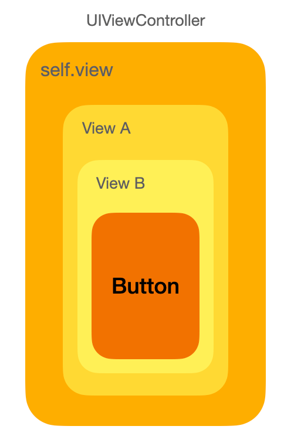

iOS事件传递链，巧用nextResponder跨层传递
在开发过程中你肯定遇到过这种场景：控制器的View中包含一个自定义视图A，A里又有包含button的自定义视图B，当用户点击button需要跳转到另一个控制器。此时跳转的逻辑当然应该在控制器里，那么要想把这个button的点击事件传递到控制器里要可以通过代理或者在控制器里self.view.A.B.button addTarget，除此之外还可以利用事件传递链来更和谐的处理。
本文我们主要包括对事件传递链理论的理解和利用传递链处理实际的业务需求。
在开发过程中你肯定遇到过这种场景：控制器的View中包含一个自定义视图A，A里又有包含button的自定义视图B，当用户点击button需要跳转到另一个控制器。此时跳转的逻辑当然应该在控制器里，那么要想把这个button的点击事件传递到控制器里要可以通过代理或者在控制器里self.view.A.B.button addTarget，除此之外还可以利用事件传递链来更和谐的处理。
本文我们主要包括对事件传递链理论的理解和利用传递链处理实际的业务需求。
到公众号【iOS开发栈】学习更多SwiftUI、iOS开发相关内容。
iOS的事件响应链
首先要说明，这里说的_不是传递链_，传递链是事件的传递过程，而这里说的响应链是指事件在找到最合适的响应者以后的响应过程。

在这样一个例子中，当用户点击了最内层的Button以后要让最外层的ViewController跳转到一个新的VC，我们有这样几种方法：
- ViewB中添加
delegate属性，并让ViewA作为它的delegate，同样VC作为viewA的delegate。这种方法最为清晰，但是如果层数继续增加，这个代理层数就会很深，也就需要写很多的胶水代码。 - 在VC中通过
self.view.viewA.viewB.button可以得到button的引用，之后可以直接通过button addTarget:self xxx直接给button添加事件。这样做省去了添加代理，但是必须每一层都把view暴露在头文件里。
除此之外还可以利用事件响应链的奇技淫巧来处理。在上面的场景中，点击button后的响应链是：button -> viewB -> viewA -> vc.view -> vc，概括来说就是：事件响应链是由内向外，直到最外层的view，之后传递给控制器，最终传递给window。
其中有两点很重要
UIResponder及其子类可以作为响应链的一环，包括UIView及其子类和UIControl等。- 通过
nextResponder可以获取到下一环的响应者。 - 事件会在触发后沿着继承体系寻找能够处理它的类，直到找到。
嵌套多层视图事件传递
有了上面的理论基础，让我们来看一下类似场景使用响应链的处理方法。
首先在viewB中的代码和控制器中的代码大概是这样：
// ViewB
[self.button addTarget:self action:@selector(showDetail) forControlEvents:UIControlEventsTouchupInside)];
// 控制器
- (void)showDetail {
}
现在问题是怎么才能让控制器响应到ViewB中的showDetail方法。
结合上面的理论知识，我们可以知道当在ViewB中没有处理showDetail事件时，这个事件会沿着继承链向上寻找到ViewB的父类——UIView，而UIView中肯定没有showDetail的实现，那就继续到UIView的父类UIResponder中寻找，很明显UIResponder中也没有这个方法的实现。
不过我们可以给UIResponder添加一个包含showDetail方法的分类来实现这个方法。
// UIResponder+Chain.m
- (void)showDetail {
}
添加这样一个分类以后，点击ViewB中的button就不会崩溃了。不过这样仍然无法让VC中的事件得到响应。
在这个基础上，我们知道通过nextResponder可以获取到下一个响应者。那么给上面的空方法添加这样一个实现：
// UIResponder+Chain.m
- (void)showDetail {
[self.nextResponder showDetail];
}
通过添加`[self.nextResponder showDetail];`，整个过程成了这样：
1. ViewB中的按钮事件通过继承链被UIResponder响应了（也就是说ViewB响应了事件），
2. viewB的nextResponder是viewA，虽然viewA中没有实现但是通过继承链它仍然可以响应，
3. 控制的视图作为viewA的父视图——viewA.nextResponder——也通过继承链处理这个事件，
4. 控制器视图的nextReponsder就是控制器本身，而`[self.view.nextResponder showDetail]`就调用到了在控制器中实现的`showDetail`方法。
经过这样的过程，实现了点击viewB中的按钮后控制器中的方法被调用了。
到这里，恭喜你掌握了这个实际开发中的利器。🎉🎉🎉
# [](#让视图层级中的多个父视图响应同一个事件 "让视图层级中的多个父视图响应同一个事件")让视图层级中的多个父视图响应同一个事件
在上面的例子中，当用户点击了viewB中的button之后，想要让viewA和控制器都能够获取到这个事件也很容易。
只需要在viewA和控制器中同时实现`showDetail`方法，不过由于viewA并不是最终的一环，需要在方法中这样做：
// viewA #import “UIResponder+chain.h”
消除Undeclared selector警告
在viewB中给button添加了方法，但是并没有对应的实现，这时候Xcode会有Undeclared selector警告。要处理这个警告有两个方法：
// ViewB
// 处理Undeclared selector方法一
#import "UIResponder+chain.h"
- (void)showDetail {
[self.nextResponder showDetail];
}
// 处理Undeclared selector方法二
#pragma clang diagnostic push
#pragma clang diagnostic ignored "-Wundeclared-selector"
[self.button addTarget:self action:@selector(showDetail) forControlEvents:UIControlEventsTouchupInside)];
#pragma clang diagnostic pop
xib
如果viewB是通过xib创建的，那么可以先把线连出来，之后把.m里面的方法删除
小心找不到响应者
如果你一不小心在上面控制器的showDetail方法中又添加了[self.nextResponder showDetail]，那程序就要crash了，为了防止这种情况，最好利用事件转发的特性进行防护——永远不要相信任何代码，包括自己写的。
到公众号【iOS开发栈】学习更多SwiftUI、iOS开发相关内容。
总结
这篇文章我们掌握了通过利用事件响应链来处理多层嵌套的视图传递事件的方法，虽然这种方式看起来挺高端，但是正如上面说的一样，它的风险是很高的，所以如果必要不要使用这种奇技淫巧。